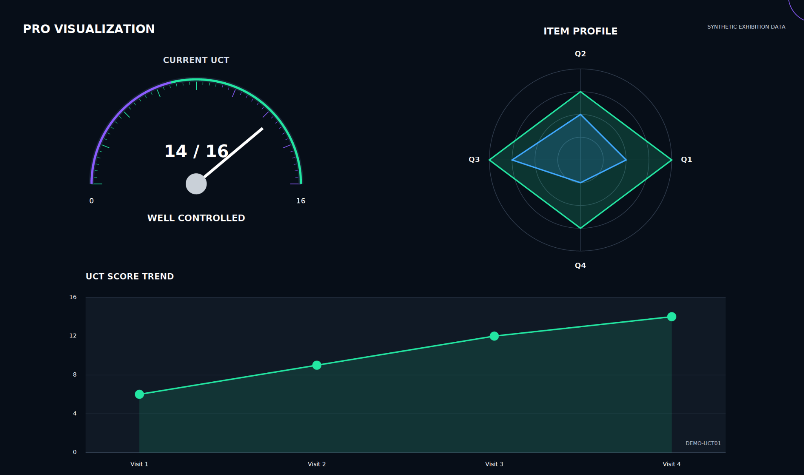

患者が伝える。
症状や生活への影響を、質問票で入力。
Clinical data platform
患者さんが質問票に入力し、結果の自動採点・前回比較・経時グラフを診察で確認。
日常診療のための臨床プラットフォームです。
One Insight. Many Possibilities.
できることを見る症状や生活への影響を、質問票で入力。
入力結果と診療情報を、ひとつの流れに。
患者ごとの経過を、わかりやすく。
Platform
Cockpit / UCT Demo
現在のスコア、項目ごとの比較、経時的な推移をひとつの画面に。診察時の経過確認と、患者さんとの対話を支えます。

Clinical Applications
アトピー性皮膚炎
提供準備中
慢性蕁麻疹
提供準備中
乾癬
提供準備中
全身性強皮症
開発中
正式提供に向けて準備中です。導入時期・対応する質問票は、お問い合わせください。
Vision
Shirabeoは、日々蓄積される患者報告アウトカム（PRO）と診療情報を、患者ごとの経過として見える形に整えます。入力の負担を抑え、診療時の情報整理と患者との対話を支援します。
ガイドラインを踏まえた、開発者の視点
患者が感じる変化を、診療の共通言語に。
慢性蕁麻疹では、診察時の皮疹や医師による評価だけでは、患者さんが日常生活の中で感じている症状や治療効果を十分に把握できないことがあります。
UCTを継続的に用いることで、患者さん自身の実感を共通の尺度で確認し、診察時の対話や治療方針の検討に役立てることができます。
UCTは治療方針を自動的に決めるものではありません。丁寧な問診と医師の総合的な判断を支えるツールとして、継続して活用できる診療環境を整えることが重要です。
小村 一浩 医師・Shirabeo開発者